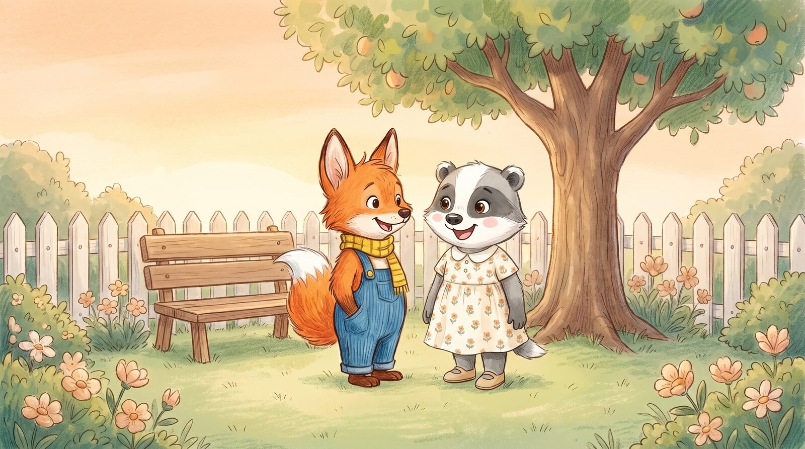
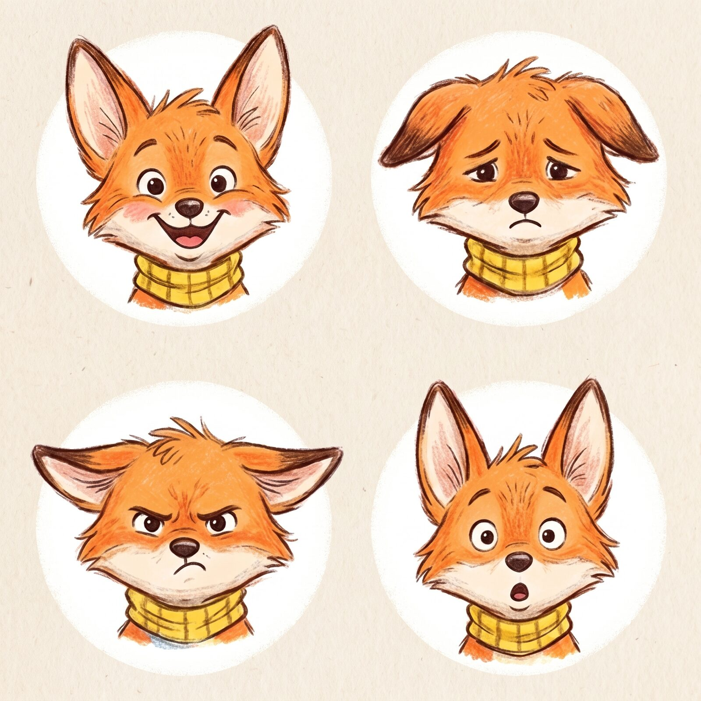
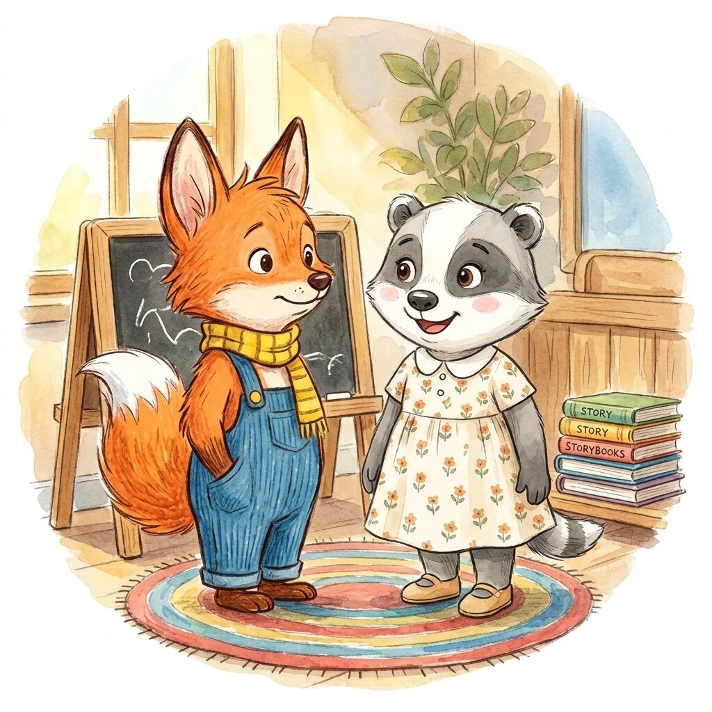
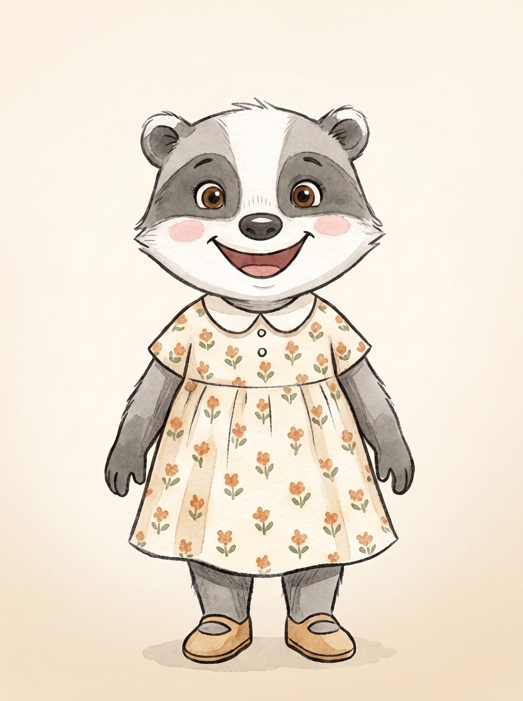
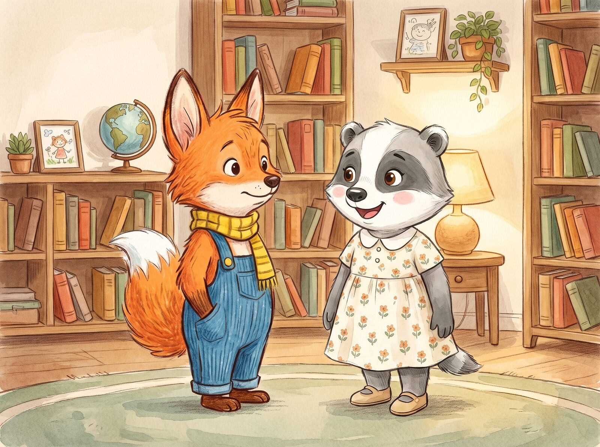
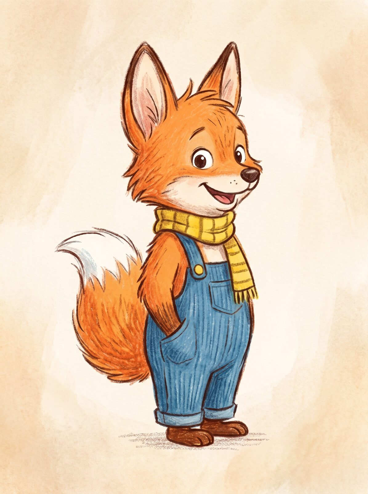
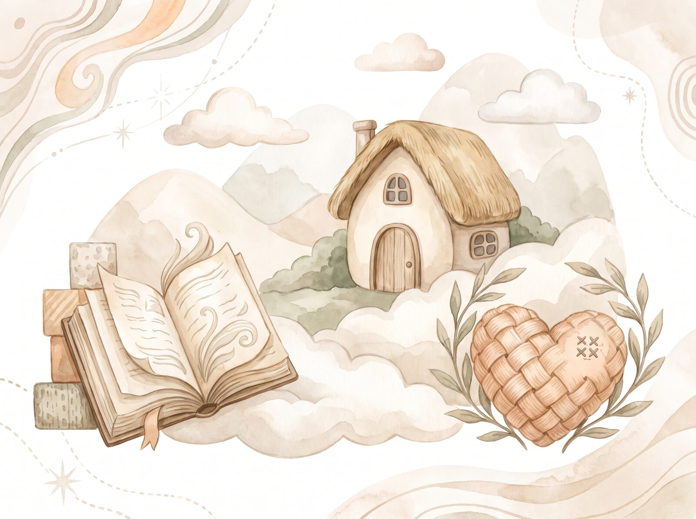

Colección «Tobi y sus emociones»
Cuentos que ayudan a los peques a entender lo que sienten
Descarga gratis un pack de actividades para jugar en familia o en el aula, y acompañar a los niños y niñas a descubrir sus emociones.
Quiero mi pack gratuito📖 Gratis · Listo para imprimir · Sin necesidad de tarjeta

gratis
El regalo
¿Qué incluye el pack de actividades?
Un recurso pensado para abrir conversaciones sobre las emociones, jugando y sin prisa.
Láminas para colorear
Ilustraciones de Tobi y Luna para pintar mientras se habla de cómo se sienten hoy.
Juegos emocionales
Dinámicas sencillas para identificar y nombrar emociones en el día a día.
Preguntas en familia
Tarjetas de conversación para compartir en casa después del cuento.
Identificación emocional
Ejercicios visuales para reconocer alegría, tristeza, enfado y sorpresa.
¿Para quién es?
Un recurso pensado para acompañar, sea cual sea tu rol

Familias
Para leer juntos antes de dormir y hablar de lo que ha pasado durante el día.

Profesores
Ideal para el rincón de lectura y para trabajar la educación emocional en el aula.

Profesionales
Un apoyo cercano para orientadores, psicólogos infantiles y educadores.


La colección
Conoce a Tobi
«Tobi y sus emociones» es una colección de cuentos ilustrados que ayuda a niños y niñas a descubrir, comprender y expresar sus emociones mediante historias cercanas y personajes entrañables.
Junto a su amiga Luna, Tobi aprende —cuento a cuento— que sentir alegría, tristeza, enfado o sorpresa es parte de crecer, y que hablar de ello siempre ayuda.
La editorial
Sobre Luna y Papel
Somos una pequeña editorial infantil dedicada a crear cuentos que acompañan a los niños y niñas en algo tan importante como aprender a conocerse a sí mismos.
Creemos en historias cálidas, ilustradas con cariño, que dan a las familias y a los educadores herramientas sencillas para hablar de emociones sin miedo y con mucho cariño.

Regalo gratuito
Llévate el pack de actividades sobre las emociones
Déjanos tu nombre y correo, y te lo enviamos ahora mismo. Sin spam, lo prometemos.